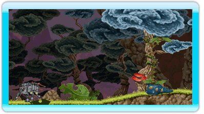

6 |
Exterior |
 |
|
 Podrás disfrutar de un completo modo aventura desarrollado en la superficie del planeta explorando diversos caminos y descubriendo los múltiples secretos que se esconden en él tomando el papel de la sonda exploradora.
En estos casos se utilizará el Wii Remote en posición horizontal.
Comenzarás la aventura justo antes de aterrizar en la superficie del planeta controlando la dirección del protagonista inclinando el Wii Remote de izquierda a derecha.
Una vez te encuentres en la superficie, pulsando la cruz de control en la dirección adecuada te desplazarás a lo largo de los escenarios. Pero no sólo te bastará con esto, ya que deberás evitar obstáculos saltando con el botón 2 que a su vez también te servirá para nadar, o bien defenderte de diversos enemigos con el láser pulsando el botón 1.
A lo largo de la aventura conseguirás diversas armas secundarias. Para acceder a ellas debes pulsar el botón B para seleccionarlas y el botón A para sacarlas y/o guardarlas. Una vez con ellas, las podrás utilizar agitando el Wii Remote.
Siempre que quieras podrás acceder al interior de la sonda exploradora pulsando el botón -, momento en el cual el juego pasará a controlarse de forma distinta, tal y como se explica en la siguiente página.
En situaciones especiales (indicadas en pantalla), deberás sujetar el Wii Remote en posición vertical apuntando a la pantalla y disparando el láser pulsando el botón A. |
 |
 |
 |